iSunOne FAQ
可以連接世界上的一切銀行，也包括國內的銀行，和全球的數字銀行、虛擬銀行。關鍵是，您可以匯款到我們公司的銀行公戶即可。
可以。
不可以。申請卡和申請VIP服務的必須是通過KYC的本人操作。換言之，連接外部賬戶和地址，也必須是iSunOne的同名賬戶，以確保是本人操作。
使用閃付功能，资产划转瞬間到賬，支持包含美元，USDT, USDC等資產。閃付有憑據為支付記錄。李四收到USDT，USDC後，可以提幣到李四的地址。李四收到美元之後，可以提現到李四的銀行。
誠實是最好的應對方式。國際貿易和跨境商業採用數字美元（USDT、USDC）作為結算貨幣已有十年之久，您可以向他們展示 iSunOne 和外部賬戶的所有支付和交易記錄，以支持您的答案。
在 iSunOne，我們制定了嚴格的安全政策來確保您的信息安全。我們還希望我們的客戶採取一系列安全預防措施。了解如何識別黑客攻擊對於保護您的賬戶和資金至關重要。為了讓您更容易發現黑客企圖，我們準備了這篇安全貼士、防騙指南，供您參考：
如果要使用直接刷信用卡買幣和提現法幣至銀行賬戶的功能，就必須現完成身份認證（KYC）。還好，iSunOne的KYC步驟可能是最簡單、最快完成的。
1. 首先，打開iSunOne App，在「首頁」點擊「設置」，再點擊「身份認證（KYC）」。
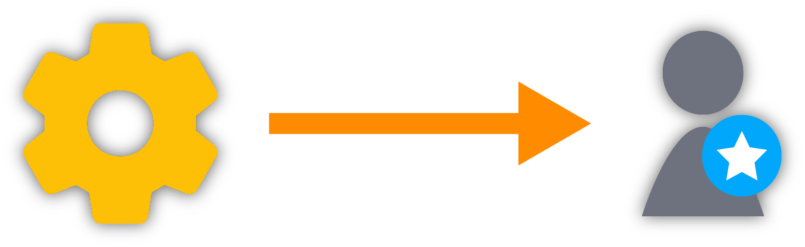
2. 根據提示填寫email，然點擊「點擊發送」。
到收件箱，打開驗證email，然後回到app，填入驗證碼，然後「提交」。
“提交”後，系統會顯示您完成了郵箱驗證。
3. 接下來，請準備好您的身份證或者護照，拍照身份證的正面和反面，或者是護照的封面和資料頁，上傳圖片。
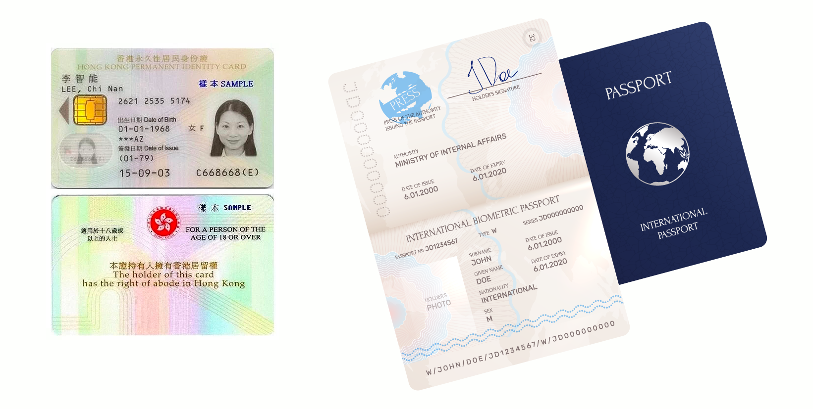
4. 請您手持之前上傳的身份證件，靠近臉拍照。請保持臉上的五官和證件的信息都可以清楚地被看到。
5. 最後，請拍照您的住址證明文件， 住址證明文件要求： 可以是銀行月結單，信用卡月結單，水、電、煤氣的賬單。 住址證明文件必須以您本人的姓名為收件人，且發出日期必須在3個月之內。
點擊“提交”後，請耐心等待我們的email結果通知。 文件上傳完畢後，耐心等待審核即可，通常1-2個工作日內會審核完畢。 您可以在「設置」頁面查看進度。 如果審核未能通過，您可以看到身分驗證（KYC）審核狀態轉變為「Please submit again」。 您可以點擊進入身分驗證（KYC）詳細頁面，查看未通過審核的具體原因。 根據身分驗證（KYC）頁面內的指示，重新上載正確的照片後，請再次點擊「下一步」，並耐心等候認證結果。
為了幫助您更快通過身分驗證（KYC）、體驗iSunOne新經濟門戶的便利，這篇文章將告訴您如何提供通過KYC所需的身分驗證照片。
您需手持身分證明資料，例如身分證資料頁或者護照資料頁（如下圖），與自己的正臉，一齊拍照。
注意： 照片需清晰，不可有反光、模糊不清、不平整等異狀 面部必須是正面 身分證或者護照不能被遮住 不能有瀏海遮到臉 面部需要盡可能地呈現清楚
正確示範如下：
错误示範：（左至右）
遮擋面部、未能看清身分證明證件信息等，KYC資料均不會被通過。
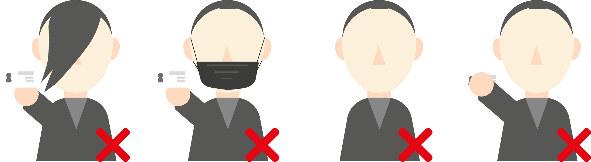
✓ 公司存在證明，包括：公司註冊證書, 商業登記證
✓ 公司股東結構圖
✓ 公司組織章程大綱
✓ 公司主要股東(超過10%以上)和董事的本人身份證件
✓ 公司授權代表（即代表公司在iSunOne開戶的責任人）的本人身份證件
✓ 公司地址證明：最近3個月的月結單；若無，提供最近3個月的水電賬單
公司註冊證明書
公司註冊證明書是成立公司相關法律文件和許可證，也被視為公司的出生證明。
商業登記證
商業登記證是在地方當局登記的法律文件，將企業確立為法人實體，並且給予一個商業登記號碼。舉例說明：如果您的公司是BVI註冊成立的，且在香港有運營實體，那麼請您提供BVI頒發的出生證明，和香港工商局辦法的商業登記證。
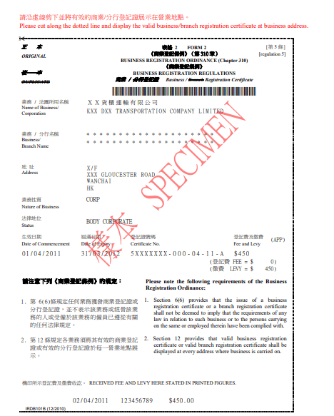
股權結構是指股份公司總股本中,不同性質的股份所佔的比例及其相互關係。股權結構是公司治理結構的基礎，不同的股權結構決定了不同的企業組織結構，從而決定了不同的企業治理結構、企業的行為和績效。 股權結構圖必須追溯到最終受益人，是一個或者多個自然人。我們需要佔股權不低於10%的股東和最終受益人的護照或者身份證件信息。
示例：
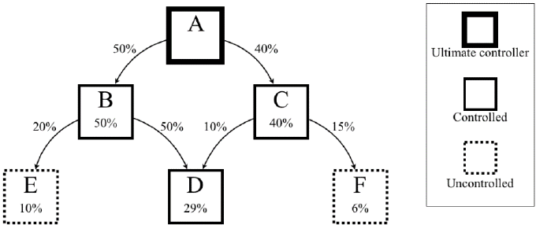
公司成立長程是一份法律聲明，包含公司成立所需的基本信息。組織章程大綱包括股東，擔保人，董事，公司秘書就公司治理，宗旨，經營等事項約定的關於公司經營的書面規則。
ERC20是以太坊區塊鏈上最常用的代幣標準之一，用於創建和發行可互操作的代幣。它定義了一套規範和接口，使得代幣合約在以太坊網絡上能夠統一交互。絕大多數主流的加密資產，都可以使用ERC20交易和劃轉。然而，由於以太坊豐富的架構及生態鏈，以太坊網絡常因擁堵承載能力不足。由於以太坊網絡的使用是按次數而不是外加以太幣ETH的價格昂貴，使用ERC20時用戶將支付極為高昂的網絡成本。
當您需要將資產轉入iSunOne時，我們誠摯地推薦您使用TRC20網絡。
TRC20是波場區塊鏈上的一種代幣標準，與ERC20類似，用於創建和發行可互操作的代幣。 TRC20定義了一套規範和接口，使得代幣合約在波場網絡上能夠統一交互。
與以太坊相比，波場網絡具有更快的交易確認速度和更低的交易費用。使用TRC20網絡進行資產轉移時，用戶可以享受到更快速的交易確認，並避免高昂的網絡成本。 iSunOne誠摯地推薦您使用TRC20網絡來轉移資產，以獲得更快速、更經濟高效的交易體驗。我們致力於為用戶提供方便、安全和成本效益的資產管理服務，選擇TRC20網絡是實現這一目標的理想選擇。
TXID的英文全稱為：Transaction ID，也稱為區塊哈希（Blockchain hash），任何一筆交易執行時都會生成的唯一字符串和憑證。
您可以通過TXID，使用區塊鏈瀏覽器，查詢到您的資產充值或提現的轉賬過程和交易狀態等信息。不同的幣種，所使用的鏈（也稱為：主網/網絡/Network）也各有不同。
對於TRC20 的資產例如USDT-TRC20, USDC-TRC20，區塊鏈瀏覽器為：
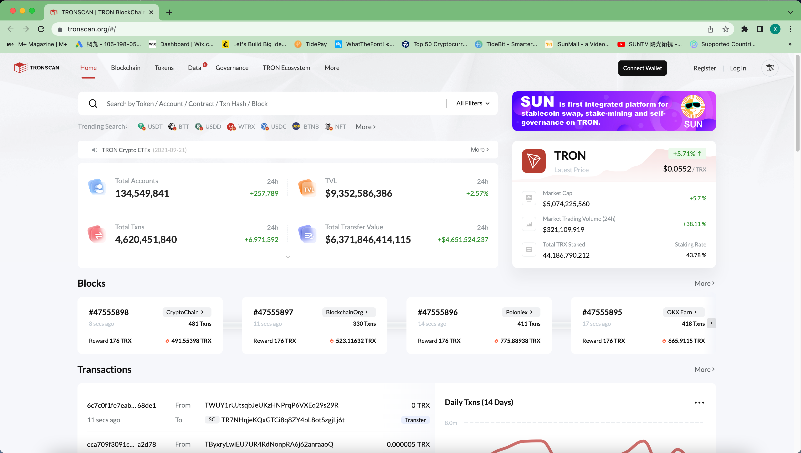
對於ERC20 的資產例如ETH，USDT-ERC20, USDC-ERC20，區塊鏈瀏覽器為：
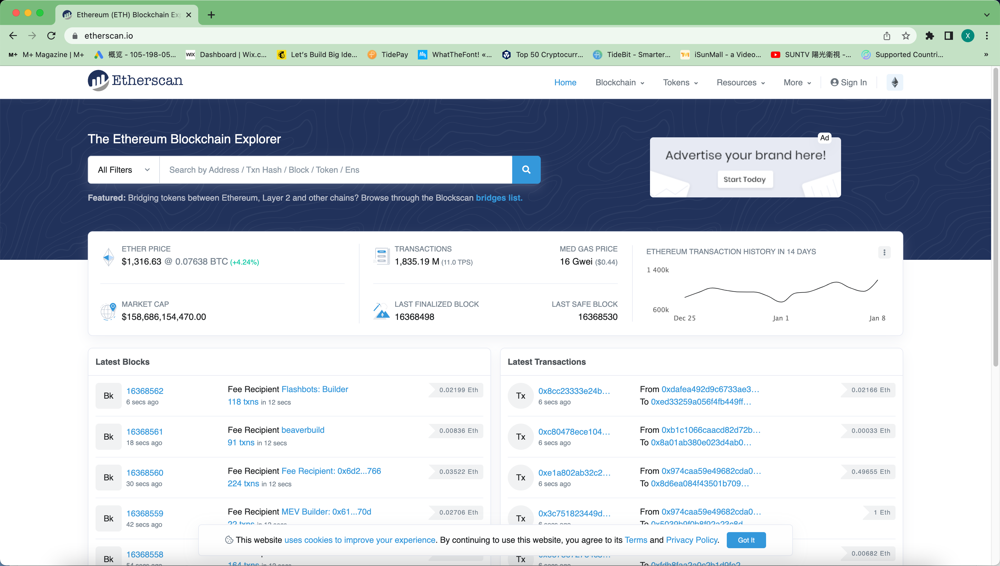
對於BTC， 區塊鏈瀏覽器為：
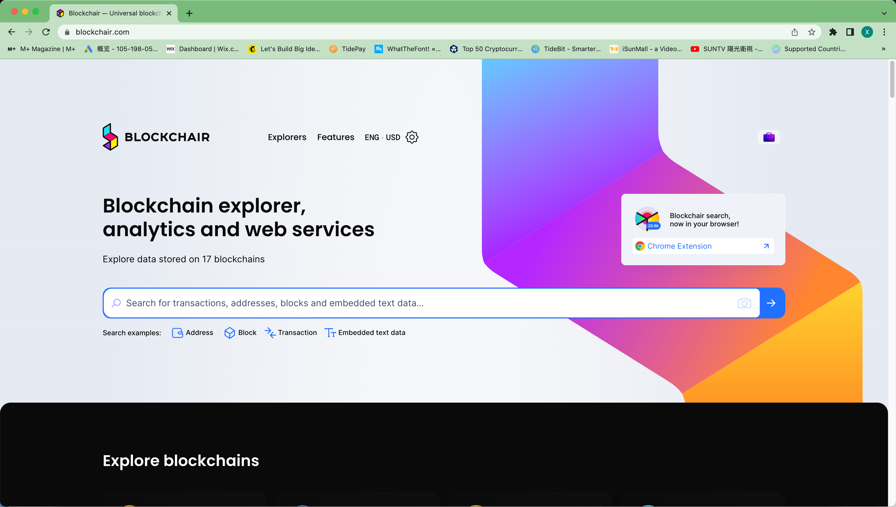
在兌換頁面，選擇要兌換的源和目標幣種，輸入金額，點擊下一步即可。
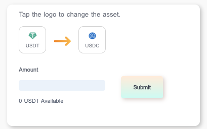
在數字賬戶，選擇提幣（Withdrawal）以继续。
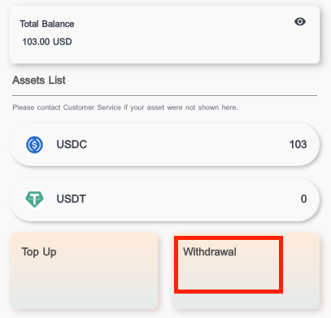
輸入轉出額與轉出地址。您也可以點擊“新增常用地址（Add address）”以保存一個常用的地址。
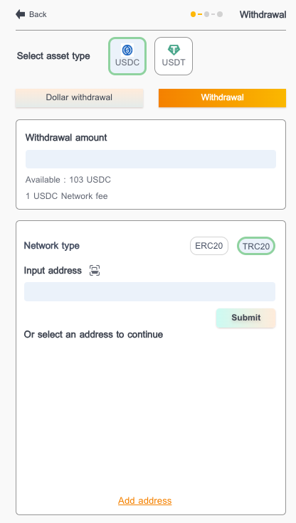
請確保您已填入正確的資產，網絡和地址。
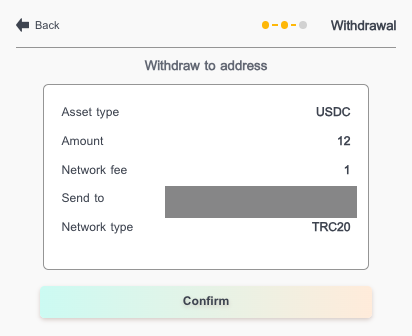
请输入点又
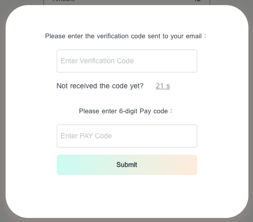
在動盪時期，數字資產在冷錢包中冬眠更安全，而不是留在中心化交易所（本質上是數據庫）或去中心化交易所（智能合約可能有漏洞）。如果您還沒有訂購Ledger 或Trezor，並且碰巧有1 或2 部用過的iPhone，請仔細閱讀數字資產自我保管的方式：
簡單流程：
A.確保您使用過的iPhone 從未越獄。恢復出廠狀態。
B.下載任何非託管錢包（例如coinbase wallet、trust wallet、imtoken、exodus）應用程序。非託管意味著你，而不是中心化平台，控制著私鑰。
C.將數字資產（例如：比特幣、以太坊）從交易所提取到上述錢包地址。
D.取出SIM 卡，打開飛行模式，切斷Wifi、藍牙，保持離線。你的手機現在是一個冷錢包了。讓它躺平在隱秘的保險櫃裡。
進階版：
使用某些類型的非託管錢包應用程序（例如tokenpocket、imtoken），您可以設置“觀察者錢包”作為“冷錢包”的伴侶。本質上，觀察者錢包充當冷錢包的區塊鏈瀏覽器。觀察者錢包保持在線進行監控，而冷錢包保持離線以保護私鑰安全。當涉及到提取資金的時候，你需要觀察者錢包和冷錢包來創建簽名和廣播。平時，冷錢包是永遠離線的，故而私鑰絕對安全。
了解更多:
代收： 接受客戶的委託，代為辦理指定款項的收款事宜的業務；公司戶，個人戶皆可
場景一：收币，提钱
客戶用數字美元全球收單，使用iSunOne提現
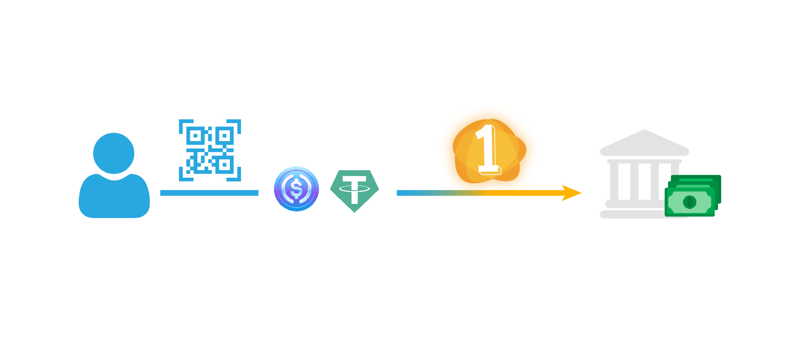
詳細說明：
客戶在某些金融系統不發達的地區（例如：東南亞、南美、非洲等）、想收到數字美元（比如：USDC， USDT等）以便於展開全球貿易、電子商務等。客戶可以用數字美元此全球收單。
服務流程
1. iSunOne開戶，並且通過KYC (文件，1，2）;
2. 通過數字美元的區塊鏈收單地址，用此地址全球收單;
服務特點：
支持全球範圍內的代收業務。
支持實時、定時、預約收款。
數字美元USDC，可以參加iSunOne的定存計畫。
美元可以隨時提現到客戶自己的帳戶。
場景二：收钱，提币
客戶委託iSunOne收錢，iSunOne收到錢之後，把數字美元發給客戶
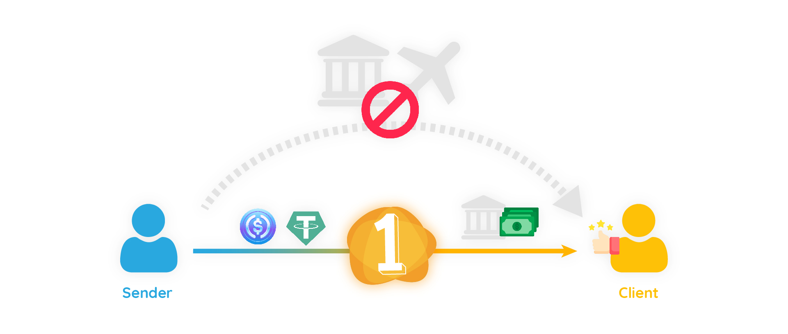
詳細說明：
客戶不想用自己的帳戶去承接一筆資金，委託iSunOne從匯款方那裡承接資金之後，收到數字美元。這個適合於對於安全和隱私有著較高要求的高淨值人群或者機構客戶，或者銀帳戶受到限制的客戶群體。
服務流程
1. iSunOne開戶，並且通過KYC (文件，1，2）;
2. 連結匯款方的外部帳戶，產生匯款指令，且確認匯款方發出匯款 (一定要填写Memo)；
3. 連結地址，提取到自己的地址。
服務特點：
支持全球範圍內的代收業務。
支持實時、定時、預約收款。
數字美元USDC，可以參加iSunOne的定存計畫。
數字美元，可以隨時提現到客戶自己的地址。
接受客戶的委託，代為辦理指定款項的匯款事宜的業務；公司戶，個人戶皆可。
場景一，付币，汇款
客戶有數字美元，但無法跨境支付，委託iSunOne電匯給收款人
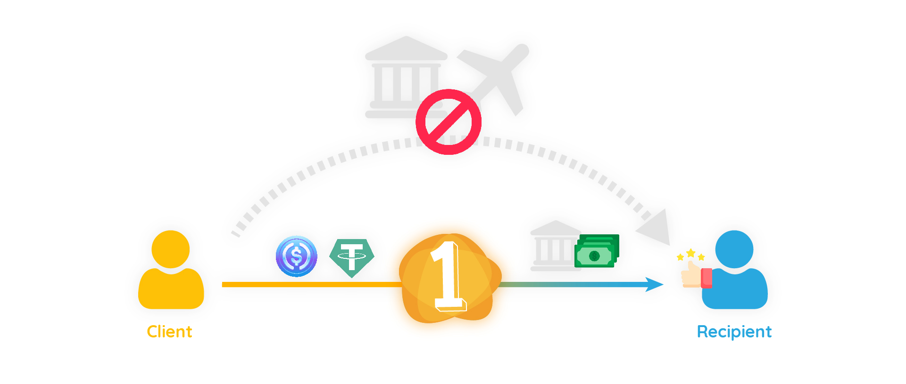
詳細說明：
客戶在某些金融系統不發達或者外匯管制的地區（例如：亞洲、南美、非洲等）、幫子女繳納留學學費、幫家人海外移民置業等場景； 或者企業用戶給供應商繳納貨款等場景； 客戶可以把數字美元轉入iSunOne，委託其發出電匯給收款人的外部帳戶。
服務流程
2. 產生數字美元地址，轉入數字美元 ;
3. 收到數字美元之後，兌換成美元;
服務特點：
支持全球範圍內的代付業務。
支持實時、定時、預約付款。
數字美元USDC，可以參加iSunOne的定存計畫。
美元可以隨時提現到連結的收款人帳戶。
場景二：付錢，發幣
客戶委託iSunOne發幣，iSunOne收到錢之後，把數字美元發給收款人
詳細說明：
收款人注重安全隱私，故而不想用自己的帳戶去承接一筆資金，故而客戶直接匯款給iSunOne之後，iSunOne向客戶指定的收款人的地址發出數字美元。這個適合於對於安全和隱私有著較高要求的高淨值人群或者機構客戶，或者交易受到限制的客戶群體。
服務流程
2. 連結自己的帳戶，發出匯款；
3. 收到美元之後，兌換成數字美元；
4. 連結收款人的地址，提取到該地址。
服務特點：
支持全球範圍內的代付業務。
支持實時、定時、預約收款。
數字美元USDC，可以參加iSunOne的定存計畫。
數字美元，可以隨時提現到連結的收款人的地址。
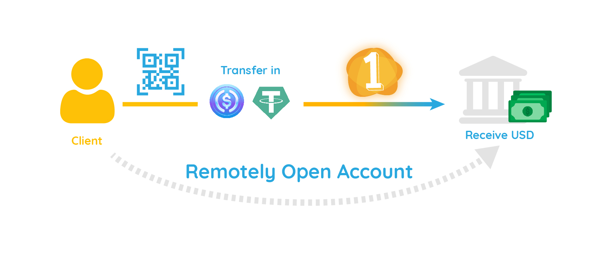
SWIFT體係是一個基於復式對賬的金流和信息流系統。 iSunOne無縫接入全球SWIFT系統，擁有復數個合作夥伴，且熟知SWIFT體系運作的規則。自從911事件之後，各國政府加強了對於賬戶和金流的反洗錢的審核。由於美國和歐盟政府是SWIFT體系的實際控制者（參考前段時間，俄烏戰爭爆發，俄羅斯被踢出SWIFT體系），可以直接影響金融貿易都市，例如：香港、新加坡、瑞士、迪拜等。
iSunOne的合作夥伴Circle Internet Financial LLC，不僅僅是美國的全牌照金融公司，嚴謹的遵守美國政府、美國證監會SEC、美國的外國資產管理辦公廳OFAC的法規，而且正在申請成為美國持牌和聯邦特許的國家商業機構。我們會根據您的收款帳戶選擇最適合的匯款方式。
iSunOne 及其合作夥伴隨時準備為您提供方便的遠程協助。即便全球新冠疫情導致邊境關閉，您的資產仍任可以通過數字美元U，在我們的幫助下，如同行雲流水，跨越邊界。我們的合作夥伴或許可根據您的具體情況提供遠程見證開戶。 iSunOne除了介紹客戶給海外帳戶，還負責最重要的一項：白名單。
在您開戶的過程中，對於每一個個人或者公司用戶，都需要進行至少兩類合規操作：
1，Know Your Customer (KYC)， 即對此用戶，包括公司或法人團體的最終受益人的知根知底的探明；
2，Anti-Money Laundering (AML)， 即對於每一筆資金的來源，收款機構都有權利探知其合法性和合規性。
iSunOne的白名單服務，就是在介紹海外遠程開戶之後，保證通過iSunOne路徑，即從數字美元發行方Circle Internet Financial LLC匯出的每一筆資金，合規的到達VIP客戶的海外賬戶。等同於iSunOne幫助把用戶的賬戶，置於白名單列表上，不會被過多的質疑。在必要的情況下，也可幫助提供必要的數據以支撐合規審查等等。這樣可以極大的降低賬號被查封的概率，為您的全球收付保駕護航。
當然，我們推薦的方式，是使用區塊鏈上的數字美元U進行和開展國際支付業務。兩個iSunOne賬號之間的資產劃轉是免費且瞬間到達的。即便您的支付方或接收方不使用iSunOne，只要使用數字美元U，iSunOne可提供全鏈、跨鏈的方式，使得區塊鏈上的數字美元U，以零費用，瞬間到達您或他人的賬戶。
iSunOne全球Visa卡屬於可以無限次充值，每次充值可高達25,000美元的預付卡。您的充值和消費幾乎不受任何限制，可盡享數字美元USDT和USDC直通消費端的暢達便利。我們相信，數字貨幣支付必將成為未來的趨勢，而iSunOne將一直致力於為用戶提供最好的數字貨幣支付服務。
查看更多：
請遵循以下步驟：
於 vip.isun.one 註冊
通過KYC認證。關於KYC所需文件請看此處：here
通過 KYC 驗證後，您就可以支付卡費了。您可以使用 USDT 和 USDC支付開卡費。
卡片資訊將在購買後顯示。如果您的卡片資訊在購買後 24 小時內未顯示，請聯絡 CSR。
恭喜 您現在可以使用 iSunOne全球Visa 卡了！
有關更多服務指引，請看以下文章：
1. 絕對不要與任何人共享您的卡號和 iSunOne 賬戶的密碼；
2. 僅在可靠和安全的網站上使用卡號和密碼；
3. 請您定期登入 iSunOne 官網或應用程序並查看詳細交易記錄，以確保您的資產沒有未經授權的劃轉或交易；如果您懷疑您全球Visa卡被盜用，請立即通知 iSunOne 客服，以便iSunOne及時採取必要的措施來保護您的賬戶。
查看更多：
當您從國際在線商家購買商品時，您可能會在交易記錄上發現一個名為“ISA Fee”的附加費用。由於iSunOne 全球Visa卡是以美元為本位的Visa預付卡，在美國以外地區使用時將被收取ISA 費用，即“國際服務評估費”。這是由Visa方面收取的、用於涵蓋處理跨境交易所需的成本的費用。這項費用通常是交易總額的一小部分，具體數額將取決於商家所在的國家。
使用iSunOne全球Visa卡進行交易時，ISA 費用通常約為當前單筆交易金額的1%。有些商家會承擔ISA費用，以吸引更多的國際客戶和提高銷售額。這通常在商家的網站或結賬頁面上有明確的說明。一些商家可能會提供特殊折扣或優惠，以減少或完全免除ISA費用。因此，在購物時，您可以嘗試查看商家是否提供此類優惠，以便節省費用。
查看更多：
iSunOne全球Visa卡提供了一種安全且便利的解決方案。作為一家極具規模的跨國公司，Visa的卡組織網絡提供優越於幾乎所有本地銀行的匯率，即約等於當天可通過Google查詢到的官方動態匯率。使用iSunOne全球Visa卡，毋需銀行開戶，可以通過USDC/USDT無限次充值，單次充值可高達25,000美元。
了解更多：
當您為 iSunOne Global Visa 卡充值並支付 USDT/USDC 後，我們的銀行合作夥伴將立即啟動交易結算程序。結算完成後，您的餘額即可使用。請注意，結算速度取決於銀行的營運情況，結算完成前將顯示為「pending」。
GPT 是 Generative Pre-trained Transformer 的縮寫，是一種先進的語言模型，可幫助您更好地理解電腦並與之溝通。透過學習語言中的模式和結構，它能讓電腦根據上下文產生準確的回覆和文章。這項技術可以提高搜尋引擎的準確性，並為人工智慧助理提供更好的使用體驗。無論是在工作還是日常生活中，GPT 模型都能為您帶來便利和樂趣，幫助您更好地參與數位生活。
ChatGPT 是由 OpenAI 提供的全球服務。然而，在某些地區，如中國大陸、香港和澳門，可能需要使用 VPN。根據 iSunOne 團隊的測試，Surfshark 和 NordVPN 都能可靠地支援在香港地區使用 ChatGPT。此外，這些 VPN 服務均可使用 iSunOne 全球 Visa 卡支付。此外，您也可以自由選擇任何適當的 VPN 服務
您可以選擇訂閱 ChatGPT Plus，它提供了更多的功能，例如存取 ChatGPT API 和使用 GPT-4。您可以使用 iSunOne 全球Visa卡輕鬆支付訂閱費用
查看更多：
根據 iSunOne 團隊的使用體驗，通過訂閱 ChatGPT Plus，您將受益於更快的存取速度和使用 OpenAI 的最新服務 GPT-4。與 ChatGPT-3.5 相比，GPT-4 提供了更高的答案品質。作為開發者，您可以使用 ChatGPT API，並將 API 用於開發其他 GPT 相關的應用程式。 ChatGPT Plus 還提供各種應用程式插件，讓您獲得更豐富的 ChatGPT 體驗。
在某些地區，使用ChatGPT Plus 會受到限制。例如，香港發行的 Visa 卡和萬事達卡不能用於 ChatGPT Plus 付款。我們建議使用 iSunOne 全球 Visa 卡。有關詳細付款說明，請參閱以下文章：